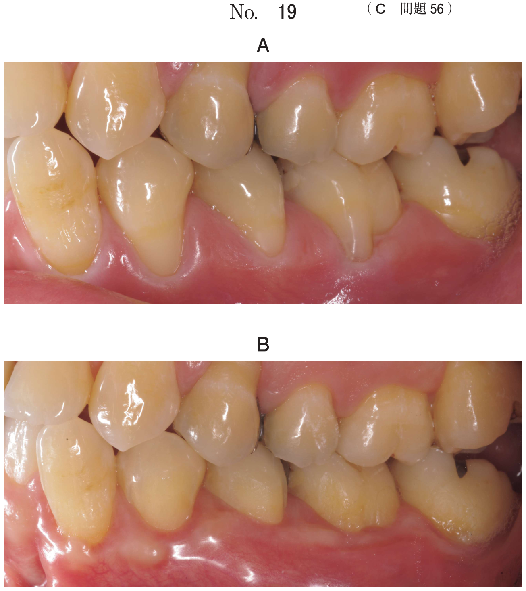
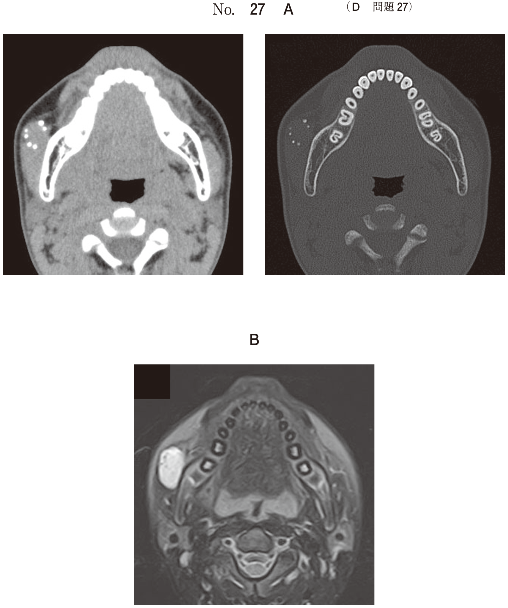
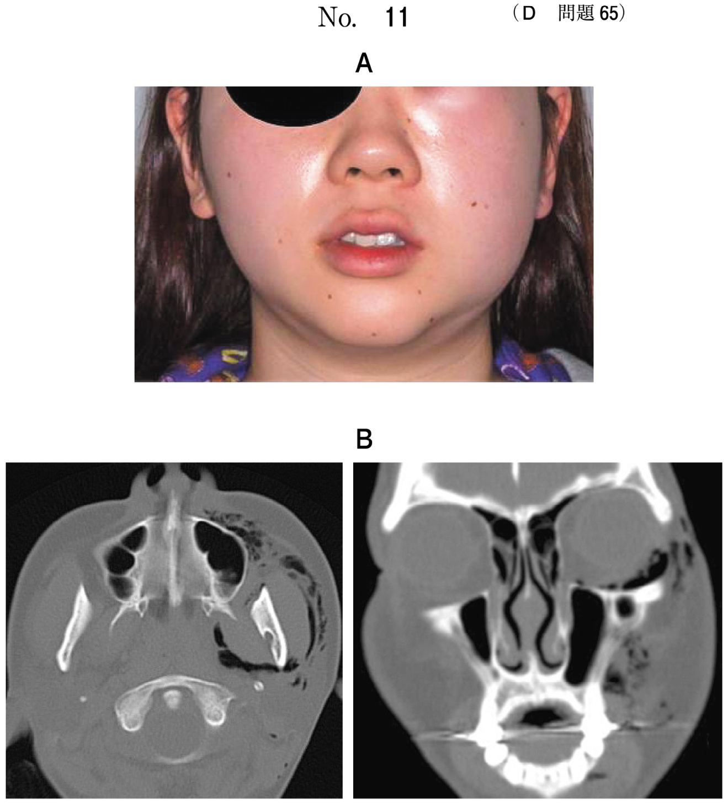
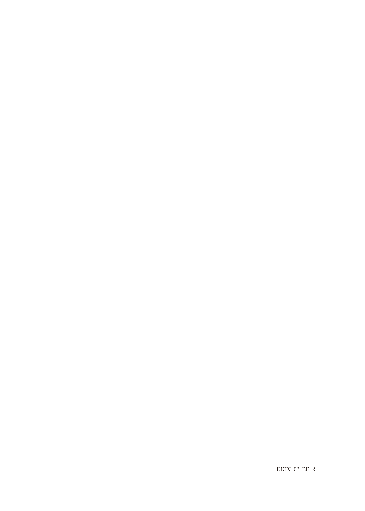
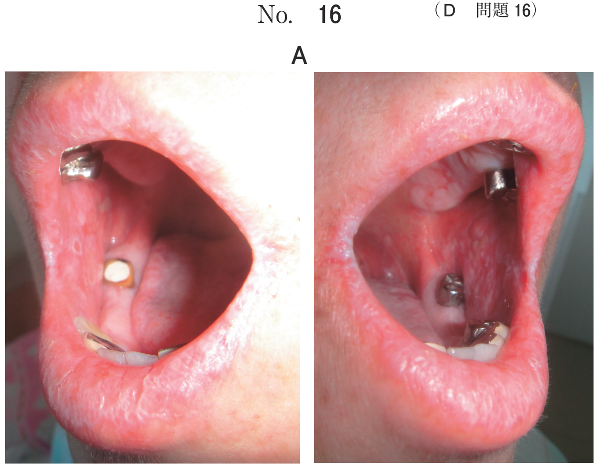
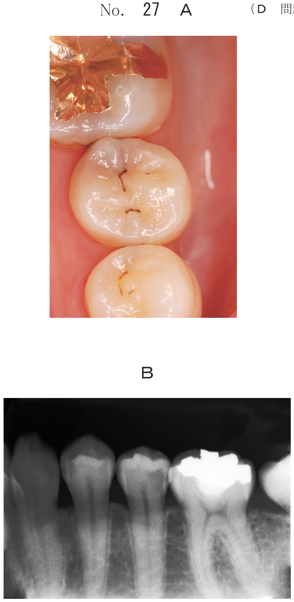

軟組織疾患
乳児期の口腔軟組織疾患（頻出）
| 疾患 | 特徴 | 対応 |
|---|---|---|
| 上皮真珠 （Epstein真珠） |
歯堤の残遺が角化。白色〜黄白色の真珠様小腫瘤。上顎前歯部に好発 | 経過観察 自然消失 |
| 萌出嚢胞 （萌出性血腫） |
萌出途上の歯冠を覆う嚢胞。波動性、無痛性。乳臼歯部に好発 | 経過観察 萌出に伴い消失 |
| 先天歯 （新生歯） |
出生時または生後1か月以内に萌出。下顎乳中切歯に多い | 切縁削除・被覆 または抜歯 |
| Bednarアフタ | 機械的刺激（哺乳瓶など）による口蓋の潰瘍 | 機械的刺激の除去 |
- 先天歯（出生時〜1か月以内に萌出）
- 上皮真珠（乳歯萌出前の歯肉に白色小腫瘤）
- 萌出嚢胞（萌出途上の歯冠を覆う嚢胞）
先天歯（Riga-Fede病）
- 先天歯の切縁による舌下面の潰瘍→Riga-Fede病
- 授乳障害をきたす
対応
- 切縁の形態修正（削除）
- グラスアイオノマーセメントやレジンによる被覆
- 改善しなければ抜歯
舌小帯強直症（頻出）
| 項目 | 内容 |
|---|---|
| 障害 | 摂取障害、嚥下障害、発音障害（特にラ行） |
| 診断 | 舌の挙上運動制限、舌前方伸展時のハート型のくびれ |
| 対応 | 授乳障害なし→5歳くらいまで経過観察 発音障害あり→舌小帯伸展術 |
舌小帯伸展術前後の機能訓練が必要となることが多い
地図状舌
- 糸状乳頭の欠如（赤色）と滲出堆積物（乳白色）
- 数時間〜数週間で模様が変化するのが特徴
- 対応：経過観察（処置不要）
粘液嚢胞
- 小唾液腺の損傷による粘液貯留嚢胞
- 下唇に好発、波動を触れる、無痛性
- 対応：摘出（原因となる小唾液腺も含めて）
疾患と対応のまとめ
| 疾患 | 対応 |
|---|---|
| 上皮真珠 | 経過観察（自然消失） |
| 萌出嚢胞 | 経過観察（萌出に伴い消失） |
| Bednarアフタ | 機械的刺激の除去 |
| 粘液嚢胞 | 摘出 |
| エプーリス | 切除 |
| 地図状舌 | 経過観察 |
過去問
Bednarアフタの原因はどれか。1つ選べ。
b 抗菌薬
c 先天歯
d ウイルス
e 機械的刺激
【解説】Bednarアフタは機械的刺激（哺乳瓶の乳首など）による口蓋の潰瘍。先天歯による舌下面の潰瘍はRiga-Fede病。
乳児期にみられるのはどれか。2つ選べ。
b 上皮真珠
c 低位乳歯
d 萌出性腐骨
e タウロドント
【解説】乳児期にみられるのは先天歯と上皮真珠。低位乳歯は混合歯列期、萌出性腐骨は第一大臼歯萌出時（6歳頃）にみられる。
小児にみられる疾患と対応の組合せで正しいのはどれか。2つ選べ。
b 上皮真珠 ーーー 摘 出
c 粘液嚢胞 ーーー 掻 爬
d エプーリス ーー 切 除
e Bednarアフタ ー 機械的刺激の除去
【解説】正しい組合せはエプーリス→切除、Bednarアフタ→機械的刺激の除去。上皮真珠は経過観察、粘液嚢胞は摘出。
2か月の男児。上顎歯肉の腫瘤を主訴として来院した。出生時には気付かなかったが、最近になって気付いたという。哺乳状態は良好で、成長発育に異常を認めない。初診時の口腔内写真（別冊No.31）を別に示す。保護者への説明で正しいのはどれか。1つ選べ。

b 「数か月以内に自然に消えます」
c 「歯ぐきの傷が治ったものです」
d 「細菌が感染して起こっています」
e 「乳歯が生えるのが遅くなります」
【解説】上皮真珠は数か月以内に自然消失する。乳歯萌出前の歯肉に白色〜黄白色の真珠様小腫瘤として認められる。
生後1週の新生児。母乳が飲めないことを主訴として産婦人科から紹介され来院した。全身疾患はない。出生直後から授乳を嫌がるという。エックス線検査から、萌出歯は下顎左側乳中切歯であった。初診時の口腔内写真（別冊No.34）を別に示す。処置として適切なのはどれか。2つ選べ。

b 舌創部の縫合
c 萌出歯の抜去
d 萌出歯切縁の形態修正
e 萌出歯切縁のレジン被覆
【解説】先天歯による舌の潰瘍（Riga-Fede病）。授乳障害があるため、まず切縁の形態修正とレジン被覆を行う。改善しなければ抜歯を検討。
5歳の女児。発音の異常を主訴として来院した。1年前から異常に気付いていたが、改善を期待しそのままにしていたという。初診時の口腔内写真（別冊No.16A）と舌突出時の写真（別冊No.16B）を別に示す。考えられるのはどれか。1つ選べ。


b 血管腫
c 地図状舌
d 正中菱形舌炎
e 舌小帯強直症
【解説】発音障害と舌前方伸展時のハート型のくびれから舌小帯強直症と診断。舌の挙上運動制限があり、発音（特にラ行）に障害をきたす。
5歳の女児。発音が不明瞭であることを主訴として来院した。舌挙上時の口腔内写真（別冊No.2）を別に示す。考えられる構音の異常はどれか。1つ選べ。

b カ 行
c サ 行
d ハ 行
e ラ 行
【解説】舌小帯強直症では舌の挙上・前方伸展が制限され、特にラ行の発音に障害をきたす。ラ行は舌尖を口蓋に接触させる必要があるため。
5歳の女児。舌表面の精査を希望して来院した。2週前に母親が気付き、舌表面の模様は数日で変化するという。初診時の口腔内写真（別冊No.24）を別に示す。適切な対応はどれか。1つ選べ。

b 抗菌薬の投与
c 舌ブラシの使用
d 抗ヒスタミン薬の投与
e 複合ビタミン剤の投与
【解説】模様が数日で変化するのは地図状舌の特徴。対応は経過観察で、特に処置は不要。
4歳の女児。下唇の腫瘤を主訴として母親と来院した。以前にも2度ほど同様の症状があったが自然に消失したという。波動を触れるが疼痛はない。初診時の口腔内写真（別冊No.42）を別に示す。適切な対応はどれか。lつ選べ。

b 開 窓
c 摘 出
d レーザー焼灼
e 抗ウイルス薬投与
【解説】下唇の波動性・無痛性の腫瘤で再発を繰り返すのは粘液嚢胞。対応は原因となる小唾液腺を含めた摘出。穿刺のみでは再発する。